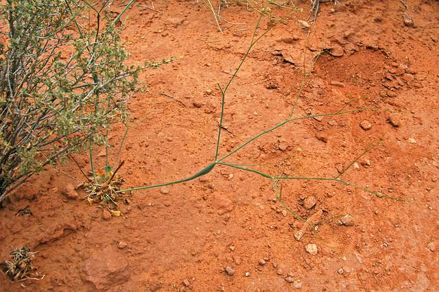

التربه
تعريف التربة
هي الطبقة السطحيّة والهشة التي تُغطي سطح الأرض، حيث تتكون من المواد الصخريّة المُفتتة الصغيرة الحجم أو الصخريّة الكبيرة الحجم، وتختلفُ التربة في مكوناتها الأساسيّة من منطقة إلى أُخرى، وذلك تبعاً للعمليات التفاعليّة التي تحدث في أغلفة سطح الأرض المُختلفة كالغلاف الصخريّ، الغلاف المائيّ، والغلاف الجويّ والغلاف الحيويّ. لذا تُعتبر التربة مزيجاً منوعاً من المركبات العضويّة والمعدنيّة المختلفة، ويعتقدُ العلماء أنَّ تاريخَ الموادّ والمركبات التي تتشكل منها التربة تعودُ إلى حقباتٍ زمانيّةٍ قديمةٍ جداً، ويختلفُ لون التربة من منطقة إلى أُخرى
التربة الرملية
تتكون أساسًا من جزيئات الرمل الكبيرة والمتوسطة الحجم. تكون هذه التربة جيدة التصريف ولكنها تفتقر إلى القدرة على احتجاز الماء والعناصر الغذائية، مما يعني أنها تحتاج إلى الري المتكرر والتسميد الجيد
التربة الطميية
.jpeg)
تحتوي على مزيج من الرمل والطين بنسب متساوية. تكون هذه التربة ذات قدرة جيدة على التصريف واحتفاظ الماء والعناصر الغذائية
التربة الصفراء
تكون غنية بالطين وتحتوي على نسبة عالية من الحديد. تكون هذه التربة شديدة القابلية للتجفيف وتحتاج إلى تحسين التصريف وتعديل الحموضة للزراعة الناجحة
التربة السمراء
.jpeg)
تكون غنية بالمواد العضوية وتحتوي على العديد من العناصر الغذائية الأساسية. تعتبر هذه التربة مناسبة للزراعة العامة وتحتفظ بالرطوبة بشكل جيد. تذكر أن هذه الأنواع ليست مطلقة وقائمة كاملة، فالتربة قد تتفاوت في خصائصها وتكون مزيجًا من أكثر من نوع، وقد تختلف تركيبتها وخصائصها من منطقة إلى أخرى. يجب أن يتم تقييم التربة المحددة للموقع الزراعي لتحديد احتياجاتها الخاصة واتخاذ الإجللمزيد من المعلومات حول التربة الزراعية وأنواعها المحددة لمنطقتك، يفضل استشارة الخبراء المحليين في الزراعة والتربة، مثل المهندسين الزراعيين أو المراكز البحثية المحلية